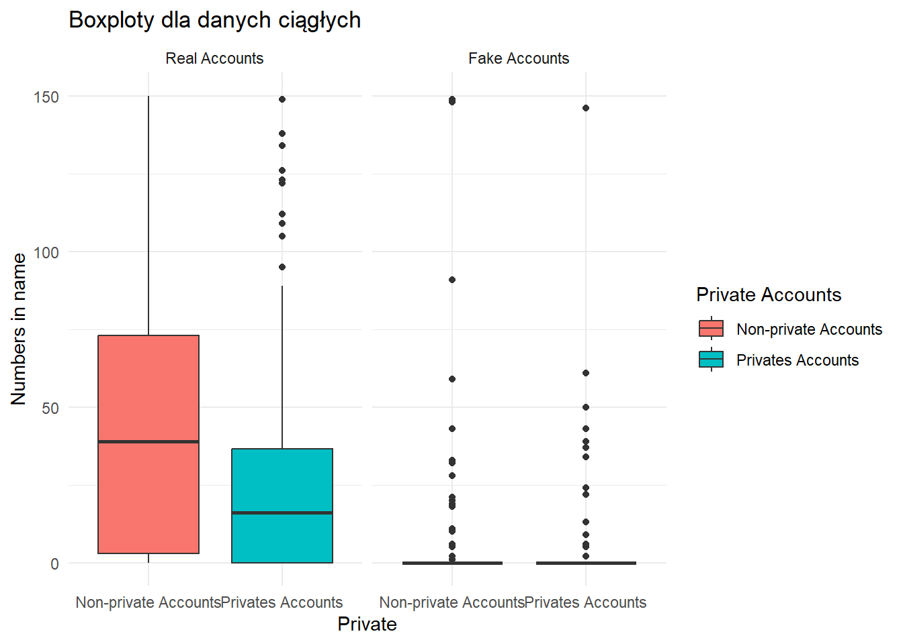

En primer lugar, podemos ver que no hay valores perdidos que tratar. Todas las características de ambos marcos de datos son numéricas. Ambos marcos de datos son pequeños, y el mayor de ellos sólo tiene 576 muestras de datos.
2.2.2 Summary
La función summary() muestra la media, mediana, cuartiles, valor mínimo y valor máximo, para variables cuantitativas y la frecuencia absoluta para variables cualitativas.
Los cuartiles son valores que dividen una muestra de datos en cuatro partes iguales. Utilizando cuartiles puede evaluar rápidamente la dispersión y la tendencia central de un conjunto de datos, que son los pasos iniciales importantes para comprender sus datos.
La manera más simple de medir la dispersión es identificar los valores mayor y menor de un conjunto de datos. La diferencia entre los valores mínimo y máximo se denomina el rango (o recorrido) de las observaciones.
summary(datatrain)
profile.pic nums.length.username fullname.words nums.length.fullname
Min. :0.0000 Min. :0.0000 Min. : 0.00 Min. :0.00000
1st Qu.:0.0000 1st Qu.:0.0000 1st Qu.: 1.00 1st Qu.:0.00000
Median :1.0000 Median :0.0000 Median : 1.00 Median :0.00000
Mean :0.7014 Mean :0.1638 Mean : 1.46 Mean :0.03609
3rd Qu.:1.0000 3rd Qu.:0.3100 3rd Qu.: 2.00 3rd Qu.:0.00000
Max. :1.0000 Max. :0.9200 Max. :12.00 Max. :1.00000
name..username description.length external.URL private
Min. :0.00000 Min. : 0.00 Min. :0.0000 Min. :0.0000
1st Qu.:0.00000 1st Qu.: 0.00 1st Qu.:0.0000 1st Qu.:0.0000
Median :0.00000 Median : 0.00 Median :0.0000 Median :0.0000
Mean :0.03472 Mean : 22.62 Mean :0.1163 Mean :0.3819
3rd Qu.:0.00000 3rd Qu.: 34.00 3rd Qu.:0.0000 3rd Qu.:1.0000
Max. :1.00000 Max. :150.00 Max. :1.0000 Max. :1.0000
X.posts X.followers X.follows fake
Min. : 0.0 Min. : 0 Min. : 0.0 Min. :0.0
1st Qu.: 0.0 1st Qu.: 39 1st Qu.: 57.5 1st Qu.:0.0
Median : 9.0 Median : 150 Median : 229.5 Median :0.5
Mean : 107.5 Mean : 85307 Mean : 508.4 Mean :0.5
3rd Qu.: 81.5 3rd Qu.: 716 3rd Qu.: 589.5 3rd Qu.:1.0
Max. :7389.0 Max. :15338538 Max. :7500.0 Max. :1.0
Se puede observar que nuestros marcos de datos están organizados en lo que parecen ser características continuas y binarias. Estas son las características que tenemos a mano:
foto de perfil: variable binaria que indica si una cuenta tiene una foto de perfil(1) o no(0);
nums/length username: variable continua que indica la proporción de caracteres numéricos por la longitud total del nombre de usuario de una cuenta;
palabras de nombre completo: variable continua que cuenta el total de palabras del nombre de la persona titular de la cuenta;
nums/lenght fullname: variable continua que indica la proporción de caracteres numéricos por la longitud total del nombre completo de la persona;
name == username: variable binaria que indica si el nombre de la persona coincide con el nombre de usuario (1=si, 0=no);
longitud de la descripción: variable continua, la longitud de la descripción del perfil.
URL externa: variable binaria que indica si un perfil tiene un enlace a un sitio web externo(1) en su bio(0);
privado: variable binaria que indica si el perfil está cerrado(1) para los no seguidores o no(0);
#posts: variable continua que contiene el número de publicaciones de ese perfil;
#seguidores: variable continua que contiene el número total de seguidores de cada cuenta;
#seguidos:variable continua que contiene el número total de personas a las que sigue la cuenta
fake: La variable binaria, una cuenta es falsa(1) o no(0).
2.2.3 Duplicados
Las filas duplicadas pueden introducir sesgos en el modelo y llevar a un sobreajuste. Así que vamos a eliminarlas.
datatest <- datatest %>%group_by_all() %>%filter(row_number() ==1)datatrain <- datatrain %>%group_by_all() %>%filter(row_number() ==1)print("Data set sin duplicados: ")
En esta sección realizaremos un análisis de series temporales. En un conjunto de datos dado, no se da ninguna variable temporal. Por lo tanto, interpretaremos el tiempo en la forma que definimos una variable temporal basada en el número de follows, cuantos más follows tenga alguien más tiempo estará en la plataforma. Independientemente de que tenga una cuenta privada o una cuenta falsa, porque un follow puede tener lugar desde tal o cual cuenta sin ningún obstáculo.
!!! Tenga en cuenta que si ya hemos realizado el paso de datos una vez, no debe repetirse, ya que los resultados del análisis pueden ser ligeramente diferentes porque asignamos las fechas de forma aleatoria.
Calculacion de fecha Día de recopilación-El conjunto de datos se ha recopilado utilizando un rastreador del 15 al 19 de marzo de 2019. El día de la difusión de Instagram- 15 de marzo de 2014, porque en ese momento instargam se difundió para todos los Windows, Android, iOS. Ahora asignaremos una fecha generada aleatoriamente a cada cuenta.
# Generate random dates between 2014-01-01 and 2019-03-15random_dates <-sample(seq(from=as.Date("2014-01-01"), to=as.Date("2019-03-15"), length.out=nrow(datatrain)), replace =TRUE)sorted_dates <-sort(random_dates)sorteddataframe<-arrange(datatrain,by=desc(X.follows))sorteddataframe$date<-sorted_dates
Veremos un aumento del número de cuentas falsas cada mes del año en cuestión.
Queremos identificar valores atípicos sólo en variables continuas teniendo en cuenta las variables si la cuenta es privada, fake. ##### Fake
ggplot(datatrain, aes(x = data$fake, y = data$X.follows)) +geom_jitter(alpha =0.1) +geom_boxplot(color ="purple", outlier.colour ="white", fill =NA)
Las cuentas no-fake siguen a una proporción mucho mayor de personas. Los valores atípicos de estas cuentas son mucho más variados (a veces menos, a veces más) que de las cuentas fake.
ggplot(datatrain, aes(x = data$fake, y = data$X.followers)) +geom_jitter(alpha =0.1) +geom_boxplot(color ="purple", outlier.colour ="blue", fill =NA)
Sólo las cuentas auténticas se encuentran con valores atípicos: tienen más followers= Las cuentas reales tienen muchos más seguidores que las cuentas falsas, como puede verse en el gráfico: puntos azules que no están dentro de los límites del boxplot.El número de personas que observan cuentas fake es muy pequeño.
ggplot(datatrain, aes(x = data$fake, y = data$X.posts)) +geom_jitter(alpha =0.1) +geom_boxplot(color ="purple", outlier.colour ="green", fill =NA)
Sólo las cuentas auténticas se encuentran con valores atípicos que varian: tienen más posts y el numero de posts es variado, como puede verse en el gráfico: puntos verdes que no están dentro de los límites del boxplot.El número de posts que tienen las cuentas fake es muy pequeño y no es variado=Las cuentas reales tienen muchas más publicaciones que las cuentas falsas
Cuantas publicas(0) tan como privadas tienen numero de outliers( verdes) muy similar, entonces es dificil a decir si la cuenta es publica o privada.
2.2.7.2 Tratar con outliers
Somos conscientes de que hay valores atípicos en el conjunto de datos. No los eliminaremos ni sustituiremos, ya que también es posible saber perfectamente a partir de estos valores si una cuenta es fake o no. Lo pasa tambien entre cuentas privadas o publicas por ejemplo basando a los numeros de followers se puede decir si la cuenta es publica o privada. Entonces: No eliminamos y no substitutimos outliers
2.3 Análisis exploratorio de datos y visualisaciones
Después de todo el proceso de tratamiento de datos, podemos realizar algunos análisis exploratorios para comprender cómo se distribuyen los datos y qué tipo de información podemos extraer de ellos.
En primer lugar, echemos un vistazo a la distribución de la característica binaria según cada etiqueta de clase objetivo. Es decir, vamos a analizar cómo se distribuyen los atributos binarios entre las cuentas reales y las cuentas falsas.
ggplot(datatrain, aes(x = data$profile.pic, fill = data$fake)) +geom_bar(position ="dodge") +scale_fill_manual(values =c("#636EFA", "#EF553B"), name ="Real/Fake") +labs(title ="Profile pic ?",x = data$profile.pic, y ="Count") +theme_minimal() +theme(legend.position ="top")
Casi ninguna cuenta real existe sin foto de perfil.
En toda dataset tenemos 287 cuentas fake y 287 de las cuentas no-fake. Entonceslas cunetas fake son la mitad de toda data set . Casi 60 % de cuentas fake no tiene foto en su prefil.
2.3.1 cuantas cuentas son falsas ?
ggplot(data, aes(x ="", fill = fake)) +geom_bar(width =1, stat ="count") +coord_polar("y", start =0) +labs(title ="La cantidad de cuentas falsas y no",fill ="Tipo de cuenta") +theme_minimal() +theme(axis.title.x=element_blank(),axis.title.y=element_blank(),panel.grid=element_blank()) +geom_text(aes(label =paste0(round((..count..)/sum(..count..)*100), "%")),stat ="count", position =position_stack(vjust =0.5))
Warning: The dot-dot notation (`..count..`) was deprecated in ggplot2 3.4.0.
ℹ Please use `after_stat(count)` instead.
El número de cuentas falsas es la misma que el numero de las cuentas reales.
2.3.1.1 ¿Qué porcentaje de cuentas falsas no tienen foto?
ggplot(datatrain, aes(x = data$private,fill = data$private)) +geom_bar() +labs(title ="La cantidad de cuentas privadas y publicas",x ="Tipo de cuenta", y ="Numero de cuentas") +theme_minimal()
Mas de mitad son las cuentas publicas.
2.3.2.1 ¿Qué porcentaje de cuentas son las cuentas privadas?
Solo 38 % de todas las cunetas de instagram es privada.
###¿Qué tipo de cuentas tienen más fullname.words?
p <-ggplot(data, aes(x =factor(fullname.words), fill = private)) +geom_bar(position ="dodge", alpha =0.7) +labs(title ="Histogram plotfor fullname.words",x ="fullname.words", y ="Number", fill ="Private", color ="Private") +facet_wrap(vars(fake)) +theme_minimal()+transition_states(fake, transition_length =1, state_length =1) animate(p, nframes =100, fps =10, renderer =gifski_renderer())
2.3.2.2 ¿Cuál es la longitud media de las descripciones?
ggplot(data, aes(y = data$nums.length.username, x = private, fill=private)) +geom_boxplot() +facet_wrap(~fake) +labs(title ="Boxploty dla danych ciągłych",x ="Private",y ="Numbers in name",fill ="Private Accounts") +theme_minimal()
Las cuentas falsas parecen tener un mayor porcentaje de números en sus nombres de usuario
ggplot(data, aes(y = data$fullname.words, x = private, fill=private)) +geom_boxplot() +facet_wrap(~fake) +labs(title ="Boxploty dla danych ciągłych",x ="Private",y ="Numbers in name",fill ="Private Accounts") +theme_minimal()
Las cuentas falsas suelen tener menos palabras en sus nombres completos
ggplot(data, aes(y = data$description.length, x = private, fill=private)) +geom_boxplot() +facet_wrap(~fake) +labs(title ="Boxploty dla danych ciągłych",x ="Private",y ="Numbers in name",fill ="Private Accounts") +theme_minimal()

###¿Depende…longitud de la descripción? #### external URL
ggplot(data, aes(x = description.length, fill = external.URL)) +geom_density(alpha =0.5) +labs(title ="Si el longitud de descripcion efecta contenido de URL externo",x ="Longitud the descripcion",fill ="external URL") +theme_minimal()
Si, el longitud de descripcion efecta contenido de URL externo. Si el longitud es mayor el URL esta incluido. ##### fake
ggplot(data, aes(x = description.length, fill = fake)) +geom_density(alpha =0.5) +labs(title ="Si el longitud de descripcion efecta contenido de URL externo",x ="Longitud the descripcion",fill ="Fake") +theme_minimal()
Parece que las cuentas falsas tienen descripciones/bios mucho más pequeñas ### ¿Afecta la longitud de la descripción al número de observadores?
library(ggplot2)# Zdefiniowanie kolorów dla kategorii fakefake_colors <-c("Fake Accounts"="blue", "Real Accounts"="pink")# Tworzenie wykresu punktowego dla długości opisu i liczby obserwatorów z określonymi koloramip <-ggplot(data, aes(x = description.length, y = X.followers, color = fake, shape=private)) +geom_point(alpha =0.5) +labs(title ="si longitud de description afecta numero de followers",x ="Longitud the descripcion",y ="Numero de followers",fill ="Fake") +scale_fill_manual(values = fake_colors) +theme_minimal()p+transition_states(description.length, wrap =FALSE) +shadow_mark()
Warning: No shared levels found between `names(values)` of the manual scale and the
data's fill values.
Si, el londitud de descripcion efecta de numero de followers.Las cuentas Real y publicas tienen mayor cantidad de followers.
2.3.3 ¿Qué longitud de descripción es más popular (tiene más seguidores) entre las cuentas privadas, las cuentas falsas y las cuentas con URL externa?
popular_description <- data %>%group_by(private, fake, external.URL) %>%summarise(median_description_length =median(description.length),avg_followers =mean(X.followers)) %>%arrange(desc(avg_followers))
`summarise()` has grouped output by 'private', 'fake'. You can override using
the `.groups` argument.
popular_description
# A tibble: 6 × 5
# Groups: private, fake [4]
private fake external.URL median_description_l…¹ avg_followers
<fct> <fct> <fct> <dbl> <dbl>
1 Non-private Accounts Real A… No URL 27 331298.
2 Non-private Accounts Real A… Has URL 71.5 183499.
3 Privates Accounts Real A… No URL 13 549.
4 Privates Accounts Real A… Has URL 37 496.
5 Non-private Accounts Fake A… No URL 0 134.
6 Privates Accounts Fake A… No URL 0 71.1
# ℹ abbreviated name: ¹median_description_length
La descripcion que tiene mas seguidores es 27.0, no tiene external URL, es real, no es privado.
2.3.4 ¿Tienen las cuentas privadas una URL externa ?
cuentas_privadas_url <- data %>%filter(private =="Privates Accounts"& external.URL!="No URL")cuentas_url <- data %>%filter(external.URL!="No URL")print(nrow(cuentas_privadas_url)/nrow(cuentas_url))
[1] 0.1641791
Solo 11 cuentas privadas tiene url externa, que es solo 16 %, el resto= 84% son las quentas publicas que tienen URL.